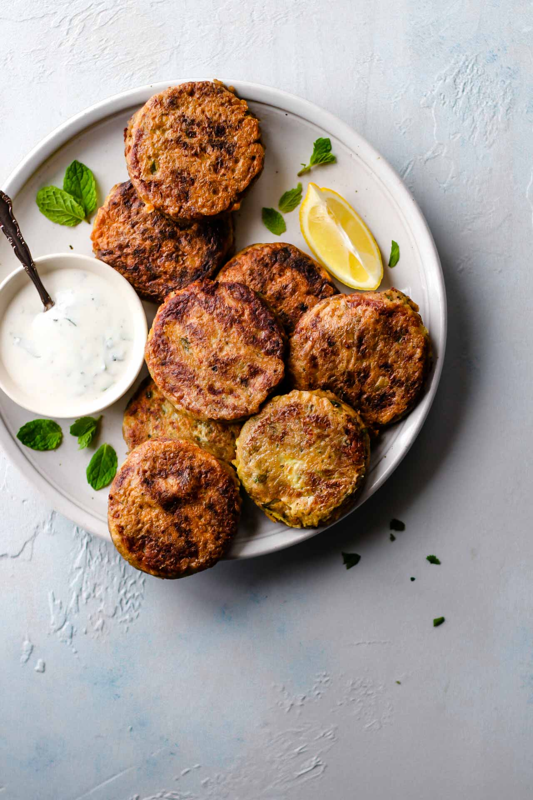

About Chicken Shami Kabab Recipe: When it comes to starters, Chicken Shami Kebab is one of the best non-vegetarian snacks to be served. You will not only love eating it, but also enjoy cooking this quick snack. Shami kebabs are succulent minced chicken/lamb with chana dal with spicy masala filling inside and crispy fried on the outside. Serve it with coriander or mint chutney
- 1 Cup chana dal
- 2 tsp oil
- 1 tsp cumin seeds
- 7-8 Cloves
- 7-8 nos black peppercorns
- 2 sticks cinnamon
- 2 tsp coriander seeds
- 1 tsp ajwain
- 3 nos red chilli whole
- 1/2 tsp chilli flakes
- 500 gms boneless chicken
- 1 tsp salt
- 1 cup water
- 1 tsp ginger, finely chopped
- 2 Green chilli
- 2 tsp garlic, finely chopped
- 1/2 cup coriander leaves , chopped
- 1/2 cup mint leaves , chopped
- 2 Egg
How to Make Chicken Shami Kebab
- Soak 1 cup of chana dal for at least 30 minutes.
- In a pressure cooker heat oil and add cumin seeds, cloves, black peppercorns, cinnamon, coriander seeds, ajwain, red chilli and chilli flakes. Saute for 1-2 minutes.
- Now add the soaked chana dal and mix thoroughly.
- Add the boneless chicken and salt. Bring to simmer, adding required quantity of water.
- Cook until all the water has evaporated and chicken is tendered.
- Let it cool for some time and then grind all the ingredients to a thick paste.
- In the paste add ginger, green chilli, garlic, coriander leaves and mint leaves. Mix all the ingredients to combine well.
- Now add the raw eggs liquid and mix thoroughly
- Using your palm make the kebabs of any desired shape and size, generally flat round shape.
- Now dipping in egg fluid shallow fry the kebabs from both sides till golden brown.
- You can serve the kebabs hot with chutney of your choice.
Key Ingredients: oil, cumin seeds, Cloves, black peppercorns, cinnamon, coriander seeds, ajwain, red chilli whole, chilli flakes, boneless chicken, salt, water, ginger, Green chilli, garlic, coriander leaves , mint leaves , Egg
Back to homepage